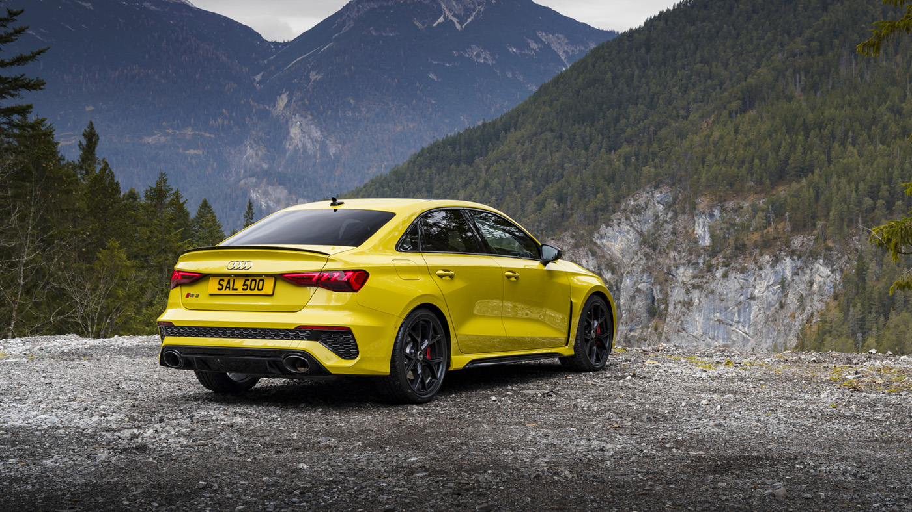

Audi R8

The Audi R8 is a striking representation of the company's dedication to precise engineering and outstanding performance. With a strong mid-engine configuration, the R8 is powered by a powerful V10 engine that produces a thrilling 562 to 611 horsepower, depending on the model and trim level. The R8's powerful engine and Quattro all-wheel-drive system enable it to reach 60 mph in an impressive 3.2 to 3.5 seconds, demonstrating its exceptional acceleration and top-tier speed capabilities. Incredibly balanced and agile, the R8's handling is out of this world, making for an exciting driving experience both on the racetrack and on the open road. Even at high speeds, its quick steering and finely adjusted suspension provide exceptional control and confidence.
Audi RS7

The Audi RS7 is a fantastic high-performance luxury sedan that skillfully combines modern technology, refinement, and power. Beneath its graceful design is a powerful twin-turbocharged V8 engine that can produce an incredible amount of horsepower, often around 591 horsepower and 590 lb-ft of torque. The RS7's remarkable powertrain allows it to accelerate from 0 to 60 miles per hour in around 3.5 seconds, demonstrating its agility and quick speed. Whether driving on straightaways or curving roads, the car's dynamic handling, variable air suspension, and all-wheel steering guarantee an exciting driving experience. The famed Quattro all-wheel-drive technology from Audi improves the car's grip and stability even more, enabling the RS7 to offer the ideal mix of luxurious comfort and thrilling speed.
Audi RS3
The Audi RS 3 is a little powerhouse that perfectly combines functionality and performance. With a powerful 2.5-liter five-cylinder turbocharged engine, the RS 3 produces an astounding 400 horsepower and around 354 lb-ft of torque. The RS 3's remarkable acceleration and speed capabilities are demonstrated as it accelerates from 0 to 60 mph in only under 3.9 seconds, thanks to its powerful engine and Audi's well-known Quattro all-wheel-drive system. Even on winding roads, the RS 3's nimble and responsive handling making it a pleasure to drive and an enjoyable driving experience. With a mix between comfort and sportiness provided by its precisely calibrated suspension and steering, fans can enjoy an exhilarating ride without sacrificing control.